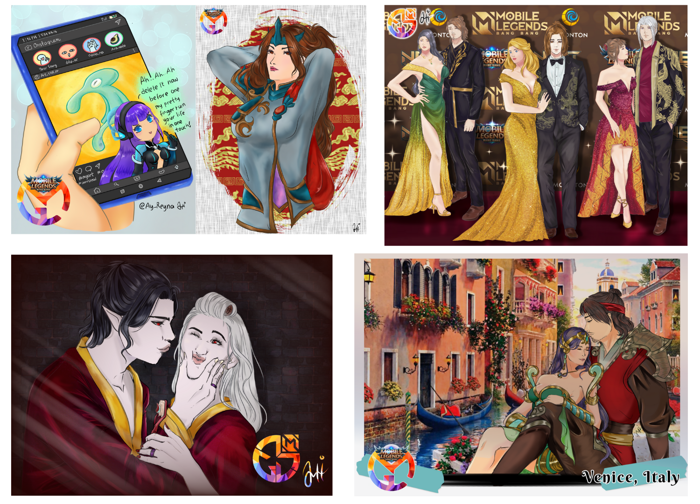

| No | Skill | Description | Years Of Experience |
|---|---|---|---|
| 1 | 3Ds Max |
In the world of 3D modeling and rendering, 3ds Max is my chosen companion. With this versatile tool, I craft intricate environments, architectural marvels, and captivating visual effects that breathe life into the realms I imagine. |
|
| 2 | Zbrush |
ZBrush has become my sculptor's chisel. It allows me to breathe life into characters and objects, infusing them with intricate details and textures. |
|
| 3 | Photoshop CC |
As a digital artist, Photoshop serves as my canvas and palette. It is where I refine my creations, manipulate visuals, and add the finishing touches that transform images into powerful stories. |
|
| 4 | MedibangPaint |
Medibang Paint is my digital sketchbook, where ideas take shape, concepts are born, and preliminary sketches come to life. |
| No | Project | Description | Porto | Tools Used |
|---|---|---|---|---|
| 1 | 3D Project | Some 3D Porto i need to make to fulfill last assignment in ESDA. |  |
Medibang Paint, Photoshop CC |
| 2 | MGL Fanart | Working as content creator for MLBB Fanart League, to support our community and connection between artist. |  |
Medibang Paint, Photoshop CC |
|  | ||||
| 3 | Artist Collaboration | Collab to make art or content together, sharing tips and trick between artist | Medibang Paint, Photoshop CC |
|
 |
||||
| 4 | Character Design | Working on character design for my own archive or project. |  |
Medibang Paint, Photoshop CC |
| 5 | Data Entry | I've honed my data entry skills by working with MWS Credential, handling essential tasks for Eracings.com in Amazon.com | 6 | Content Creator | At Siapakasihdiskon.com, I've embraced the role of content creator and data entry specialist for branch store of company. | Photoshop |